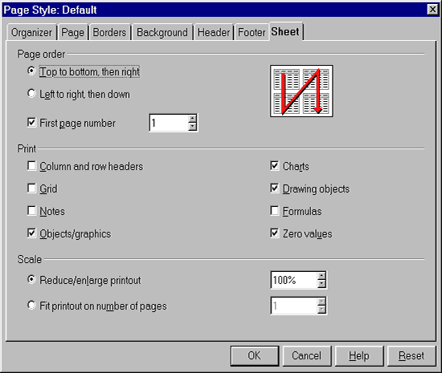

provided by
the OpenOffice.org Documentation Project
OpenOffice.org gives you the ability to print a selected zone of your spreadsheet. To see how to perform this action:
In the page preview (File-Page Preview), you can verify that only
the selected columns and rows will be printed.
The printing range selected is displayed in the first line called 'user
defined'.
The greater part of the printing options, for a sheet, are accessible with the menu command, Format -> Page in the Sheet tab.

It's self-explanatory, except for the section, Scale, which is a bit obscure:
You can access this window also from the Page Preview by clicking on
the last icon of the Toolbar. 
A trick to print faster some particular sheets from a group or workbook (let's say the 2nd and the 4th one):
Note: if you wish to insert the same thing into different sheets, select them as you have just done for printing them, then insert your data in the cell that you can see, and that insertion will be repeated in all the sheets you have selected. (It's the power of a carbon copy on your display!)
You can find other printing options by selecting File-Print... from the Menu bar. If you click on the 'Options' button, you'll have the possibility to suppress the output of empty pages or to print only the selected sheets.
To display a break page preview before printing your sheet:
The sections that will be printed are highlighted with a blue border.
Author: Sophie Gautier
Translation: Gianluca Turconi
Thanks: Richard Holt, proofreader and OOo contributor
Integration by: Gianluca Turconi
Last modified: February 24, 2002
Contacts: OpenOffice.org Documentation Project http://documentation.openoffice.org/index.html